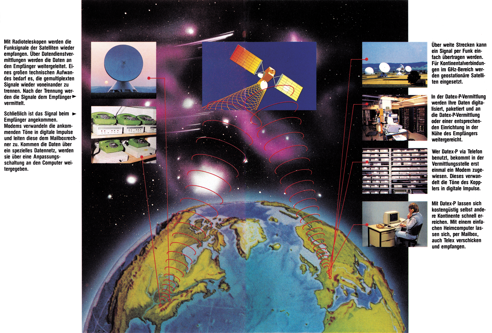

Meilenweit
Datex-P verbindet Sie schnell in alle Welt. Es ist schon erstaunlich: Innerhalb von Sekunden hat man eine Datenverbindung von München nach Washington oder Tokio. Welche Wege geht das Signal?

Welcher Computerfan möchte nicht einmal wissen, was eigentlich alles mit den Daten passiert, die er zu Hause per Akustikkoppler oder Modem zu einem anderen Computer abschickt. Hier finden Sie die wichtigsten Stationen eines Daten-Signals auf seinen Weg durchs Telefon oder über Datex-P.
Das Datensignal nimmt seinen Weg in Ihrem Akustikkoppler, der die digitalen Signale Ihres Computers in tiefe und hohe Pfeiftöne umsetzt. Über das Telefon werden die Pfeiftöne über ein zweiadriges Kabel zum nächsten Anschlußverteiler geleitet. Die Anschlußverteiler sind die grauen viereckigen Kästen, die Sie teilweise am Gehsteig sehen können. Von diesem Kasten aus geht ein Kabel mit zig Adern zur nächstgelegenen Ortsvermittlungsstelle. Hier werden die angewählten Leitungen geschaltet. Das heißt sie werden mit dem gewünschten Anschluß verbunden. Angenommen, Sie wohnen in Berlin und möchten nach München telefonieren. Dann wählen Sie eine Nummer die mit 089 beginnt. Anhand der »0« erkennt die Vermittlung, daß es sich um ein Ferngespräch handelt und nicht um eine Ortsverbindung. Die Ortsvermittlung gibt das Gespräch deshalb gleich an die Fernvermittlung weiter. Die »89« sagt aus, daß das Gespräch nach München gehen soll. Es wird also eine Leitung, die gerade frei ist, nach München geschaltet. Da zwischen München und Berlin eine Richtfunkstrecke existiert, werden Telefongespräche zwischen den beiden Ortsnetzen nicht über eine Drahtleitung abgewickelt, sondern per Funk.
In München übergibt die Fernvermittlung das Gespräch an die Münchner Ortsvermittlung, wo die Anschlußnummer ausgewertet wird. Dabei engen die einzelnen Ziffern der Anschlußnummer einen immer kleiner werdenden Ortsbereich ein, bis die Verbindung Berlin — München steht.
Wenn Sie nun Daten mit einer Mailbox mittels Datex-P20 austauschen, sieht die ganze Sache etwas komplizierter aus. Mit Datex-P20 können Sie nämlich nur jemanden anwählen, der einen Datex-P-Hauptanschluß besitzt. Denn Datex-P kann zwar über das Telefonnetz erreicht werden, kann aber nicht Daten wieder ins Telefonnetz einspeisen (noch nicht!). Doch was passiert nun mit dem Signal? Angenommen, Sie wollen von München aus eine Datex-P-Mailbox in Amerika anrufen. Auf den ersten Kilometer geht das Datex-P-Signal die gleichen Wege wie eine normale Telefonverbindung: Die Töne eines Akustikkopplers oder Modems wer den über das Telefon zur Ortsvermittlungsstelle geschickt. Beispielsweise, Sie haben die Nummer 228730 gewählt, die Datex-P-Num-mer von München. Die Ortsvermittlung verbindet Sie dann mit dem Datex-P-PAD in München und Sie hören aus dem Telefonhörer einen Pfeifton, den Datex-P-Carrier. Nach dem Einloggen in Datex-P geben Sie die Datex-P-Nummer der amerikanischen Mailbox ein. Häufig beginnen diese Nummern mit 03106. Durch die »0« erkennt Datex-P, daß es sich um eine Auslandsverbindung handelt, an der »31«, daß die Verbindung in die USA geht. Die »06« ist die Kennummer des amerikanischen Tymnet-Netzes, das unserem Datex-P-Netz, zumindest in der prinzipiellen Funktion, ähnlich ist.
Die der »03106« folgenden Ziffern sind die Mailboxanschlußnummern im Tymnet. Während der ganzen Übertragung arbeiten Tymnet und Datex-P zusammen. An den Berührungspunkten werden die unterschiedlichen Übertragungsprotokolle der beiden Netze aneinander angepaßt.
In der Datex-P-Vermitt-lungsstelle, dem PAD, passiert nun folgendes: Ihre Telefonleitung wird auf ein ganz normales Postmodem geschaltet, das die Töne Ihres Akustikkopplers empfängt und wieder in digita-le(!) Impulse verwandelt. Die digitalen Impulse werden nun dem eigentlichen PAD, der Paketier/Depaketier-Stelle übermittelt.
Das PAD hat die Aufgabe, die von Ihnen kommenden Signale zu sammeln und als Paket auf die Reise zu schicken. Stellen Sie sich dazu einen Eimer vor, der über ein kleines Rinnsal gefüllt wird und erst wenn ervoll ist, ausgekippt wird. Ähnlich funktioniert das PAD. Sie schicken Ihre Daten mit 30 Zeichen pro Sekunde (300 bit/s) auf die Reise, das PAD sammelt 64 davon und jagt die 64 Zeichen als Paket mit einer Geschwindigkeit von 6400 Z/s zum Empfänger. Das heißt, daß die Verbindung zum Empfänger immer nur für sehr kurze Zeit bestehen muß. In der restlichen Zeit kann »Ihre« Leitung von anderen Datex-P-Benutzern in Anspruch genommen werden. Daraus erklärt sich auch, daß Datex-P kostengünstiger als eine Telefonverbindung ist.
Räumlich gesehen ist ein PAD ein etwa 20 x 25 cm großer Platineneinschub, der immer einem Postmodem, also einem Datex-P-Benutzer, zugeordnet wird. Aus diesem Grund braucht man natürlich eine große Zahl davon, die ganze Schaltschränke füllen. Das »Post-PAD« muß jetzt nur noch mit dem PAD der Mailbox verbunden werden.
64000 Zeichen pro Sekunde
Nachdem das PAD Ihre Daten übernommen hat, schickt ein Computer sie in digitaler Form auf die Reise. Die Daten gehen von München zur Fernvermittlungsstelle. Von hier aus werden sie zur Satellitenvermittlung in Raisting weitergeleitet. Ihre Daten werden dann, gemischt (gemultipexed) mit vielen anderen, erstmal in den Weltraum zu einem geeigneten geostationären Satelliten geschickt. Dieser funkt die Daten dann nach Amerika, wo Radioteleskope die Funksignale wieder empfangen. Nachdem die vielen einzelnen Daten-Signale von Telefongesprächen, Datenübertragungen etc. »auseinanderklamü-stert« sind, wird Ihr Signal dem Tymnet eingespeist, das sie schließlich über verschiedene Fern- und Ortsvermittlungsstellen mit der gewünschten Mailbox verbindet.
Ihr Signal passiert auf seinem Weg einen riesigen technischen Apparat. Aber trotzdem ist die Verbindung innerhalb von Sekunden hergestellt. Es ist schon faszinierend, im Nu mit einem anderen Kontinent verbunden zu sein. Vor allem wenn man überlegt, welchen langen Weg die Daten aus Ihrem Computer dabei zurücklegen.
(hm)